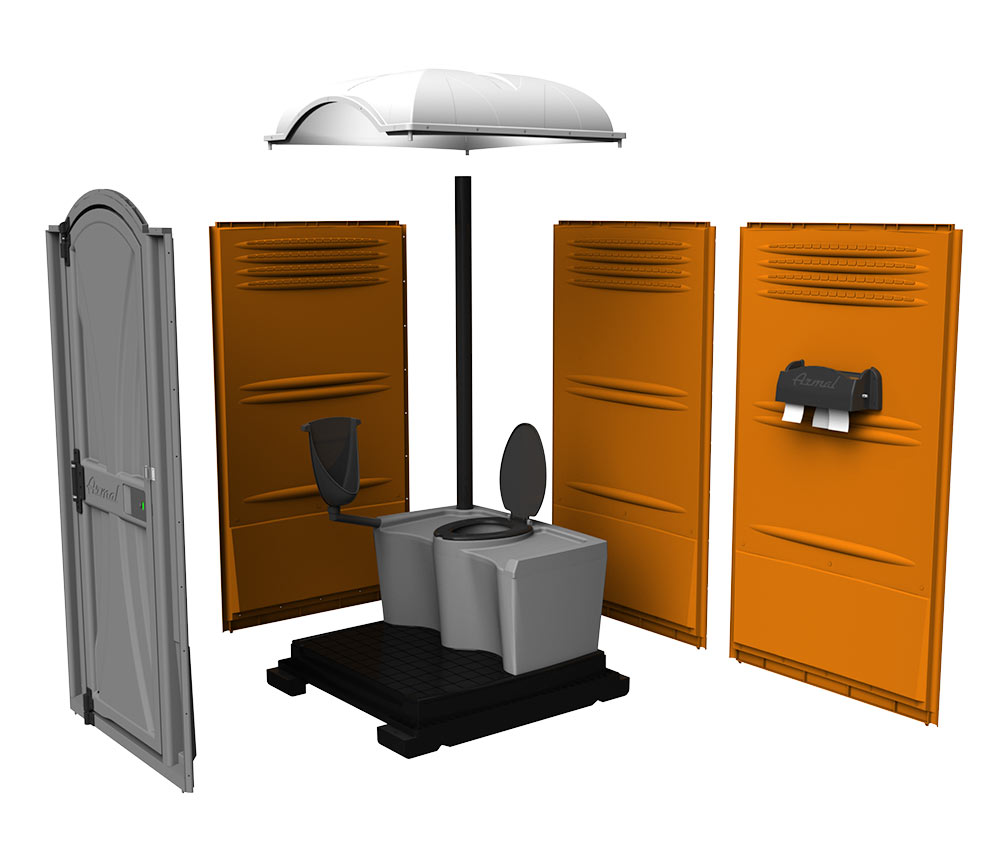
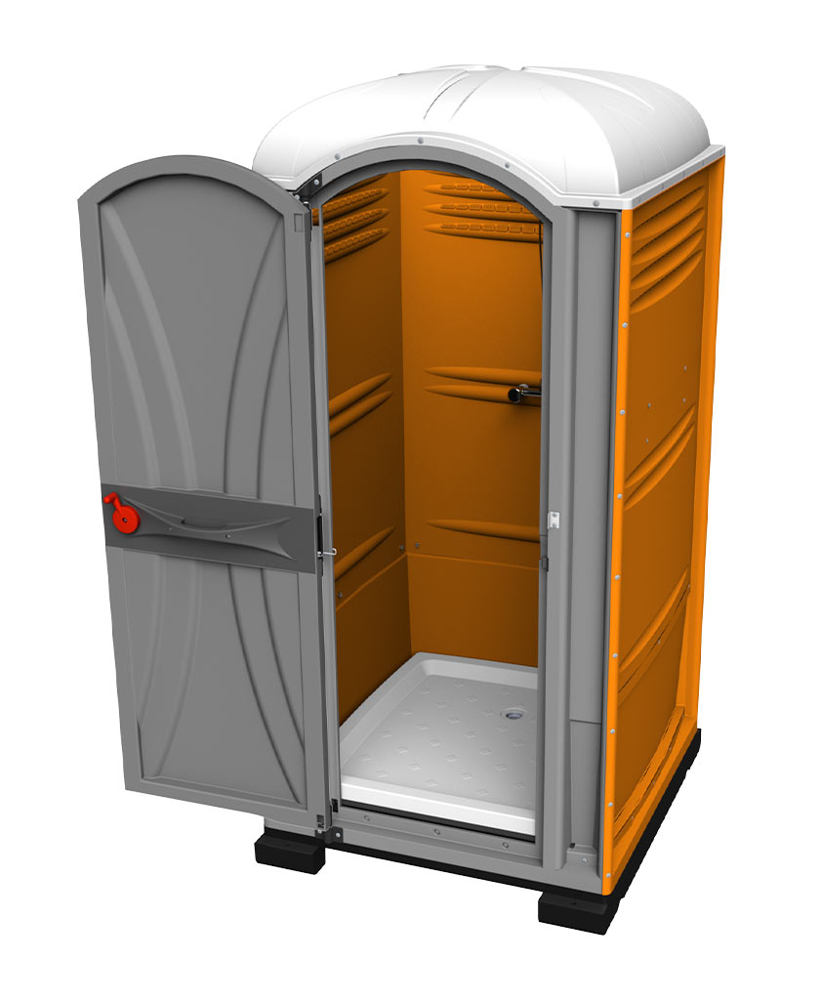
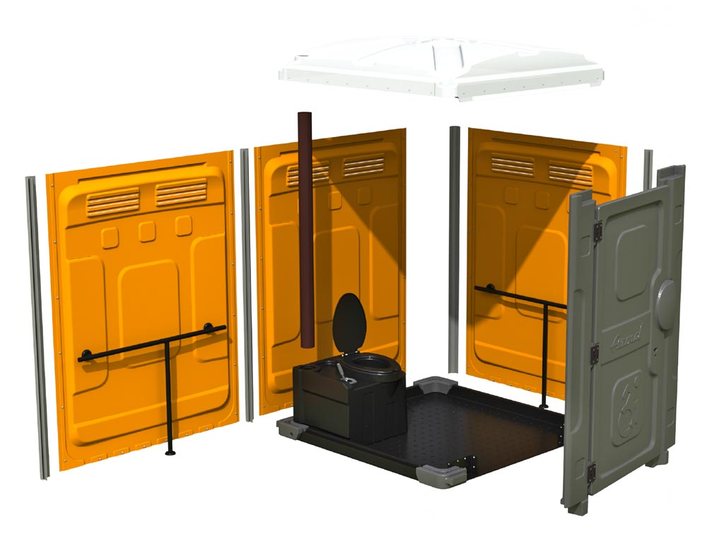
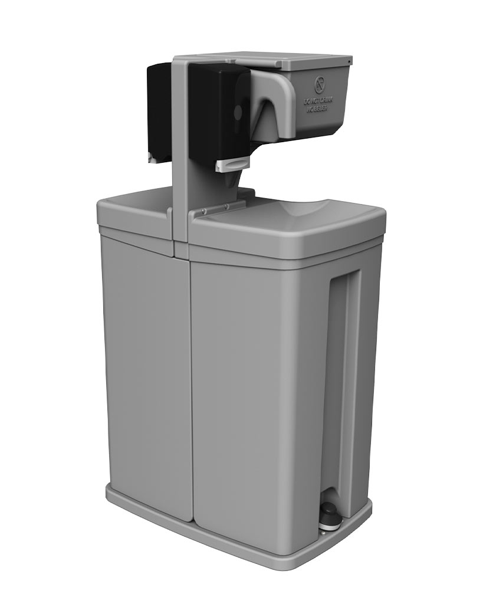

Baños Portátiles
Línea WAVE para uso intensivo: cabina resistente, ventilación integrada y tanque de alta capacidad.
Baños, duchas, lavamanos y repuestos originales ARMAL para mantener tu operación activa sin pausas. Respuesta comercial inmediata y despacho rápido a todo Colombia.
Haz clic en cada servicio para ver detalle técnico, ventajas operativas y componentes por línea.

Línea WAVE para uso intensivo: cabina resistente, ventilación integrada y tanque de alta capacidad.


Cabinas para higiene en exterior con piso antideslizante y distribución interna para operación continua.


Modelo AXS con puerta amplia, pasamanos metálicos y maniobra cómoda para silla de ruedas.

Modelos internos y externos con accionamiento por pedal para higiene de manos sin contacto.
Catálogo clasificado completo de ARMAL con repuestos organizados por categoría. Haz clic en cualquier repuesto para abrir su ficha ampliada con foto grande y especificaciones.
Diseño robusto, repuestos originales y acompañamiento comercial para mantener tu flota lista, limpia y rentable.
Con ARMAL combinas cabinas resistentes, modelos accesibles, duchas y lavamanos con una línea completa de repuestos para reposición inmediata.
Cabinas en HDPE con pisos antideslizantes y componentes pensados para uso intensivo en obra y eventos.
Catálogo amplio de repuestos para puerta, tanque, sanitario, descarga, tornillería y accesorios interiores.
Sistemas con pedal, ventilación eficiente y configuraciones para mejorar la experiencia del usuario final.
Baños portátiles, duchas, capacidad reducida, lavamanos y repuestos en un solo proveedor.
Atención inmediata por WhatsApp con propuesta clara, tiempos de entrega y configuración según tipo de proyecto.
Partes modulares fáciles de cambiar para reducir paradas y mantener continuidad operativa.
Unidades limpias, funcionales y bien presentadas para obras, ferias, conciertos y eventos corporativos.
Atención comercial y soporte para Bucaramanga y proyectos a nivel nacional.
Cl. 70 #06-19 Bodega 1, Bucaramanga, Santander
+57 316 246 3825
Lunes a Sábado: 8:00 AM - 6:00 PM
@armalcolombia